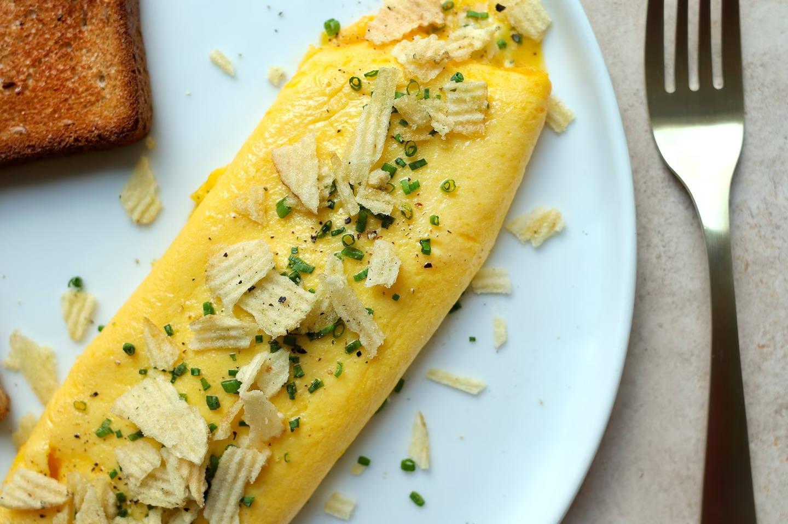

The Bear S2 Boursin Potato Chip Omelette

This omelette shown in season 2 of Hulu's TV show "The Bear" is a twist on the classic French Omelette
By whisking the eggs through a strainer, piping a log of Boursin cheese into the filling of the omelette, and crushing some chips over top, the classic dish is updated with a little modern flair and richness
Ingredients
- 3 large eggs
- 2 tablespoons salted butter
- Boursin Cheese
- Fresh Chives; thinly sliced
- Potato chips; gently crushed
Instructions
- Beat eggs through a sieve to create an extra smooth mixture
- Transfer Boursin into a piping bag or ziploc bag, cut a 1/4 inch slit in corner of bag
- Heat a tablespoon of butter on medium low heat in a non stick skillet
- Add egg mixture to skillet, agitating immediately with a wooden spoon or rubber spatula
- Cook until top of omelette is mostly set
- Run spatula under the edges of the omelettle, and jiggle the pan to unstick it from the surface
- Remove from heat
- Pipe a generous line of Boursin down the centre of the omelette
- Holding the handle of the pan, carefully tilt it so the top of the omelette starts to curl onto itself
- Using the spatula curl the omelette over onto itself
- Similarly close the other side of the omelette unitl it is sealed over
- Gently transfer the omelette onto a plate, seam side down by inverting the pan, quickly but gently over the plate
- Rub the omelette with butter to add shine and provide adhesion to the toppings
- Garnish with thinly sliced chives and crushed potato chips
- Serve and Enjoy!